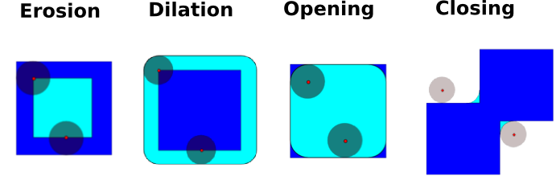

Geometrical transformations on images#
scipy.ndimage provides manipulation of n-dimensional arrays as
images.
import numpy as np
import matplotlib.pyplot as plt
Changing orientation, resolution, ..#
import scipy as sp
# Load an image
face = sp.datasets.face(gray=True)
# Shift, rotate and zoom it
shifted_face = sp.ndimage.shift(face, (50, 50))
shifted_face2 = sp.ndimage.shift(face, (50, 50), mode='nearest')
rotated_face = sp.ndimage.rotate(face, 30)
cropped_face = face[50:-50, 50:-50]
zoomed_face = sp.ndimage.zoom(face, 2)
zoomed_face.shape
(1536, 2048)
<Figure size 1500x300 with 0 Axes>
Image filtering#
Generate a noisy face:
face = sp.datasets.face(gray=True)
face = face[:512, -512:] # crop out square on right
noisy_face = np.copy(face).astype(float)
rng = np.random.default_rng()
noisy_face += face.std() * 0.5 * rng.standard_normal(face.shape)
Apply a variety of filters on it:
blurred_face = sp.ndimage.gaussian_filter(noisy_face, sigma=3)
median_face = sp.ndimage.median_filter(noisy_face, size=5)
wiener_face = sp.signal.wiener(noisy_face, (5, 5))
<Figure size 1200x350 with 0 Axes>

Other filters in scipy.ndimage.filters and scipy.signal
can be applied to images.
Compare histograms for the different filtered images.
Mathematical morphology#
Note
Mathematical morphology stems from set theory. It characterizes and transforms geometrical structures. Binary (black and white) images, in particular, can be transformed using this theory: the sets to be transformed are the sets of neighboring non-zero-valued pixels. The theory was also extended to gray-valued images.

Mathematical-morphology operations use a structuring element in order to modify geometrical structures.
Let us first generate a structuring element:
el = sp.ndimage.generate_binary_structure(2, 1)
el
array([[False, True, False],
[ True, True, True],
[False, True, False]])
el.astype(int)
array([[0, 1, 0],
[1, 1, 1],
[0, 1, 0]])
Erosion
scipy.ndimage.binary_erosion()
a = np.zeros((7, 7), dtype=int)
a[1:6, 2:5] = 1
a
array([[0, 0, 0, 0, 0, 0, 0],
[0, 0, 1, 1, 1, 0, 0],
[0, 0, 1, 1, 1, 0, 0],
[0, 0, 1, 1, 1, 0, 0],
[0, 0, 1, 1, 1, 0, 0],
[0, 0, 1, 1, 1, 0, 0],
[0, 0, 0, 0, 0, 0, 0]])
sp.ndimage.binary_erosion(a).astype(a.dtype)
array([[0, 0, 0, 0, 0, 0, 0],
[0, 0, 0, 0, 0, 0, 0],
[0, 0, 0, 1, 0, 0, 0],
[0, 0, 0, 1, 0, 0, 0],
[0, 0, 0, 1, 0, 0, 0],
[0, 0, 0, 0, 0, 0, 0],
[0, 0, 0, 0, 0, 0, 0]])
# Erosion removes objects smaller than the structure
sp.ndimage.binary_erosion(a, structure=np.ones((5,5))).astype(a.dtype)
array([[0, 0, 0, 0, 0, 0, 0],
[0, 0, 0, 0, 0, 0, 0],
[0, 0, 0, 0, 0, 0, 0],
[0, 0, 0, 0, 0, 0, 0],
[0, 0, 0, 0, 0, 0, 0],
[0, 0, 0, 0, 0, 0, 0],
[0, 0, 0, 0, 0, 0, 0]])
Dilation
scipy.ndimage.binary_dilation()
a = np.zeros((5, 5))
a[2, 2] = 1
a
array([[0., 0., 0., 0., 0.],
[0., 0., 0., 0., 0.],
[0., 0., 1., 0., 0.],
[0., 0., 0., 0., 0.],
[0., 0., 0., 0., 0.]])
sp.ndimage.binary_dilation(a).astype(a.dtype)
array([[0., 0., 0., 0., 0.],
[0., 0., 1., 0., 0.],
[0., 1., 1., 1., 0.],
[0., 0., 1., 0., 0.],
[0., 0., 0., 0., 0.]])
Opening
scipy.ndimage.binary_opening()
a = np.zeros((5, 5), dtype=int)
a[1:4, 1:4] = 1
a[4, 4] = 1
a
array([[0, 0, 0, 0, 0],
[0, 1, 1, 1, 0],
[0, 1, 1, 1, 0],
[0, 1, 1, 1, 0],
[0, 0, 0, 0, 1]])
# Opening removes small objects
sp.ndimage.binary_opening(a, structure=np.ones((3, 3))).astype(int)
array([[0, 0, 0, 0, 0],
[0, 1, 1, 1, 0],
[0, 1, 1, 1, 0],
[0, 1, 1, 1, 0],
[0, 0, 0, 0, 0]])
# Opening can also smooth corners
sp.ndimage.binary_opening(a).astype(int)
array([[0, 0, 0, 0, 0],
[0, 0, 1, 0, 0],
[0, 1, 1, 1, 0],
[0, 0, 1, 0, 0],
[0, 0, 0, 0, 0]])
Closing:
scipy.ndimage.binary_closing()
Check that opening amounts to eroding, then dilating.
An opening operation removes small structures, while a closing operation fills small holes. Such operations can therefore be used to “clean” an image.
a = np.zeros((50, 50))
a[10:-10, 10:-10] = 1
rng = np.random.default_rng()
a += 0.25 * rng.standard_normal(a.shape)
mask = a>=0.5
opened_mask = sp.ndimage.binary_opening(mask)
closed_mask = sp.ndimage.binary_closing(opened_mask)
<Figure size 1200x350 with 0 Axes>
Check that the area of the reconstructed square is smaller than the area of the initial square. (The opposite would occur if the closing step was performed before the opening).
For gray-valued images, eroding (resp. dilating) amounts to replacing a pixel by the minimal (resp. maximal) value among pixels covered by the structuring element centered on the pixel of interest.
a = np.zeros((7, 7), dtype=int)
a[1:6, 1:6] = 3
a[4, 4] = 2; a[2, 3] = 1
a
array([[0, 0, 0, 0, 0, 0, 0],
[0, 3, 3, 3, 3, 3, 0],
[0, 3, 3, 1, 3, 3, 0],
[0, 3, 3, 3, 3, 3, 0],
[0, 3, 3, 3, 2, 3, 0],
[0, 3, 3, 3, 3, 3, 0],
[0, 0, 0, 0, 0, 0, 0]])
sp.ndimage.grey_erosion(a, size=(3, 3))
array([[0, 0, 0, 0, 0, 0, 0],
[0, 0, 0, 0, 0, 0, 0],
[0, 0, 1, 1, 1, 0, 0],
[0, 0, 1, 1, 1, 0, 0],
[0, 0, 3, 2, 2, 0, 0],
[0, 0, 0, 0, 0, 0, 0],
[0, 0, 0, 0, 0, 0, 0]])
Connected components and measurements on images#
Let us first generate a nice synthetic binary image.
x, y = np.indices((100, 100))
sig = np.sin(2*np.pi*x/50.) * np.sin(2*np.pi*y/50.) * (1+x*y/50.**2)**2
mask = sig > 1
<Figure size 700x350 with 0 Axes>
scipy.ndimage.label() assigns a different label to each connected
component:
labels, nb = sp.ndimage.label(mask)
nb
8
Now compute measurements on each connected component:
areas = sp.ndimage.sum(mask, labels, range(1, labels.max()+1))
areas # The number of pixels in each connected component
array([190., 45., 424., 278., 459., 190., 549., 424.])
maxima = sp.ndimage.maximum(sig, labels, range(1, labels.max()+1))
maxima # The maximum signal in each connected component
array([ 1.80238238, 1.13527605, 5.51954079, 2.49611818, 6.71673619,
1.80238238, 16.76547217, 5.51954079])
Extract the 4th connected component, and crop the array around it:
sl_3 = sp.ndimage.find_objects(labels)[3]
sl_3
(slice(30, 48, None), slice(30, 48, None))

See the summary exercise on Image processing application: counting bubbles and unmolten grains for a more advanced example.